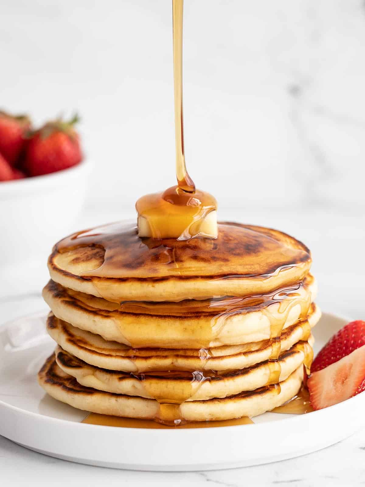

Fluffy Pancakes

Description
This easy homemade pancake recipe makes the most delicious and fluffy
stack of pancakes around! Perfect for a cozy weekend breakfast.
Ingredients
- 1 cup all-purpose flour ($0.07)
- 1.5 tsp baking powder ($0.03)
- 1/2 tsp salt ($0.03)
- ¾ cup +2 Tbsp warm milk* ($0.02)
- 2 Tbsp melted butter ($0.20)
- 1 large egg ($0.21)
- 2 Tbsp sugar ($0.02)
- 1/2 tsp vanilla extract ($0.14)
- 4 tsp cooking oil ($0.05)
Instructions
- Whisk together the flour, baking powder, and salt in a bowl.
-
In a separate bowl, whisk together the milk, egg, melted butter,
sugar, and vanilla extract.
-
Pour the bowl of wet ingredients into the bowl of dry ingredients and
stir just until combined. The mixture should be thick, but still
pourable, and a little bit lumpy. Let the batter rest for 15 minutes.
-
Heat a large skillet or griddle over medium. Once hot add enough
cooking oil to coat the surface (I use about ½ tsp per pancake). Add
the pancake batter to the hot griddle, ¼ cup at a time. Use the back
of the measuring cup to spread the batter into a 4.5-inch diameter
circle.
-
Cook the pancakes until bubbles form over the surface and begin to
pop, the edges of the pancakes look dry, and the bottom is golden
brown (about 60 seconds). Flip the pancakes and cook on the second
side until golden brown (about 30 seconds).
-
Repeat with the remaining batter, adding more oil to the skillet
between batches or as needed, until all of the pancakes have been
cooked. Keep the pancakes warm on a plate under a towel or in a warm
oven until all of the pancakes have been cooked. Serve warm with your
favorite toppings!